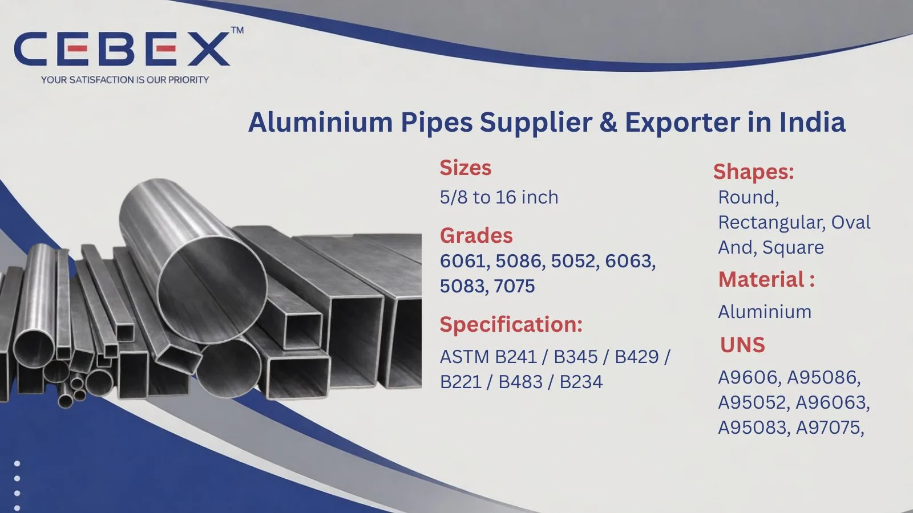

Looking for a reliable Aluminium Pipe Supplier & Exporter? Lightweight, corrosion-resistant, and durable solutions.
In modern engineering and industrial applications, lightweight materials with high strength and corrosion resistance are essential for efficiency and performance. As a leading Aluminium Pipe Supplier & Exporter in India, CEBEX STEEL INDIA offers precision-engineered aluminium pipes designed to meet diverse industrial requirements.
Aluminium pipes are widely recognized for their excellent strength-to-weight ratio, corrosion resistance, and ease of fabrication. These properties make them ideal for applications in construction, automotive, marine, aerospace, and general engineering industries.
Our manufacturing facility is equipped with advanced extrusion, forming, and finishing technologies, enabling us to produce aluminium pipes with high dimensional accuracy and superior surface finish. Each pipe is engineered to deliver consistent performance, durability, and long service life in both indoor and outdoor environments.

Selecting the right Aluminium Pipe Supplier & Exporter in India is crucial for ensuring product quality, reliability, and long-term performance. CEBEX STEEL INDIA is known for its strong manufacturing expertise, strict quality control, and customer-focused approach.
We supply and export aluminium pipes in compliance with international standards such as ASTM B241, ASTM B221, and EN standards. Each product undergoes thorough inspection and quality checks to ensure mechanical strength, dimensional accuracy, and surface quality.
Our facility maintains complete traceability and documentation for every order. We provide test certificates, inspection reports, and export documentation for global shipments.
With efficient logistics and secure packaging, we ensure timely delivery to Africa, the Middle East, Europe, and Southeast Asia.
Aluminium pipes are designed for lightweight performance combined with excellent corrosion resistance and versatility.
| Feature | Specification / Detail |
|---|---|
| Product Type | Aluminium Pipes |
| Standards | ASTM B241, ASTM B221 |
| Grades | 6061, 6063, 6082, 7075 |
| Types | Seamless, Extruded, Welded |
| Size Range | –– NB to 24– NB |
| Thickness | As per requirement |
| Surface Finish | Mill Finish, Anodized, Polished |
| Temper | T6, T651, T5 |
Our product range includes extruded aluminium pipes, seamless pipes, and welded pipes suitable for structural and industrial applications. Extruded pipes are widely used due to their excellent finish and dimensional accuracy, while seamless pipes offer better strength and pressure resistance. Welded aluminium pipes provide cost-effective solutions for general engineering and fabrication uses.
We also offer custom aluminium pipes as per drawings and project specifications.
Aluminium pipes are available in multiple grades, each offering specific mechanical and corrosion-resistant properties.
| Grade | Common Name | Typical Applications | Standards |
|---|---|---|---|
| 6061 | Structural Alloy | Construction, automotive | ASTM B241 |
| 6063 | Architectural Alloy | Frames, railings | ASTM B221 |
| 6082 | High Strength Alloy | Heavy-duty structures | EN 755 |
| 7075 | Aerospace Alloy | Aerospace, defense | ASTM B241 |
| Category | Standards |
|---|---|
| Pipe Standards | ASTM B241, ASTM B221 |
| International Standards | EN, DIN, ISO |
Aluminium pipes offer balanced mechanical properties and corrosion resistance.
Aluminium alloys typically contain Aluminum (Al), Magnesium (Mg), Silicon (Si), Zinc (Zn), Copper (Cu), and Manganese (Mn).
| Property | Typical Range |
|---|---|
| Tensile Strength | 150 – 570 MPa |
| Yield Strength | 80 – 500 MPa |
| Elongation | 8% – 25% |
| Hardness | 60 – 150 HB |
| Size (NB) | OD (mm) | Thickness (mm) | Weight (kg/m) |
|---|---|---|---|
| –– | 21.3 | 2.77 | 0.45 |
| 1– | 33.4 | 3.38 | 0.90 |
| 2– | 60.3 | 3.91 | 1.80 |
| 4– | 114.3 | 6.02 | 4.50 |
| 8– | 219.1 | 8.18 | 12.00 |
Custom sizes and thicknesses are available as per project requirements.
Aluminium pipes are widely used across various industries due to their lightweight and corrosion-resistant properties. These include construction, automotive, marine, aerospace, HVAC systems, and general engineering applications.
They are ideal for structural frameworks, fluid transportation, and applications requiring high strength with reduced weight.
All aluminium pipes undergo strict quality checks including dimensional inspection, visual inspection, and mechanical testing. We ensure compliance with international standards and provide test certificates for every shipment.
Pipes are packed using export-grade materials such as wooden cases, bundles, and protective wrapping to prevent damage during transit. Each pipe is properly labeled for identification. We provide complete export documentation including invoices, packing lists, and test certificates for smooth international shipping.
As a trusted Aluminium Pipe Supplier & Exporter in India, we supply aluminium pipes to major projects across Africa. Our export team ensures timely delivery with full documentation and compliance. Our aluminium pipes are widely used in infrastructure, construction, and industrial projects across Nigeria, Egypt, Kenya, South Africa, and other regions.
In addition to Aluminium Pipes, we also manufacture and export Stainless Steel Pipes , Duplex Stainless Steel Pipes, Super Duplex Pipes, Inconel Pipes,and Hastelloy Pipes. These pipes are designed for demanding industrial applications requiring corrosion resistance, strength, and reliable performance across varying temperatures.
Browse our full range:
CEBEX STEEL INDIA is known for delivering consistent quality, technical expertise, and global export capability. We offer competitive pricing, reliable supply, and customized solutions for all piping requirements.
Aluminium pipes are used in construction, automotive, marine, aerospace, and HVAC applications due to their lightweight and corrosion resistance.
Common grades include 6061, 6063, 6082, and 7075, each suitable for different applications.
They offer lightweight strength, corrosion resistance, easy fabrication, and long service life.
We supply aluminium pipes from –– NB to 24– NB with custom thickness options.
Yes, all aluminium pipes are supplied with test certificates and inspection reports.
Yes, we supply and export aluminium pipes as per drawings and project requirements.